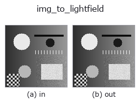
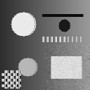

bridge op• Data kinds: image → lightfield
• Call: fullseye.apply(img, "img_to_lightfield", a=0.5, b=0.5) (the 2-D model is one image plus two scalar knobs a,b∈[0,1])

*The figure is the actual output on a synthetic 128×128 input. Left: input, right: output. Point clouds are drawn as a top-down scatter (brightness = z), 1-D series as a line plot, volumes as the maximum-intensity projection along z, videos as the middle frame, complex images as magnitude; return values that are not pictures are shown as the values themselves.*
Sweeping knob a (0.1 / 0.5 / 0.9, the other knob at its default):
▸ img_to_lightfield: knob a sweep (docs site)
Sweeping knob b (0.1 / 0.5 / 0.9, the other knob at its default):
▸ img_to_lightfield: knob b sweep (docs site)
On other images (synthetic scene / photo / coins. Top row: inputs, bottom row: their outputs. Knobs at default):
▸ img_to_lightfield: other inputs (docs site)
*The 4th column is a colour (H,W,3) input. This op handles colour without crossing channels (it does not convolve the colour channel as a third spatial axis).*
Motion (GIF: frames / views / slices in turn. The still figure is the complete one; the GIF is supplementary):

Split the image into a foreground and a background layer and build a 4-D light field (V,U,H,W) with parallax.
A 2-layer version of the same forward model as lf_synthesize: viewpoint (v, u) sees the image shifted, per layer, by (slope * (v - v_c), slope * (u - u_c)) (linear interpolation, nearest neighbour at the borders). The background layer has slope 0 (at infinity), the foreground layer (pixels at or above the threshold) has slope slope, and the foreground occludes the background (the mask is shifted per viewpoint as well). Since the displacement is linear in the angular index, the EPI slope, the best refocus slope and the disparity between the end viewpoints slope * (U - 1) are all known in closed form.
• a → foreground slope slope = 1.5 * a pixels/viewpoint (0.75 at a=0.5; for 5×5, 3 px between the ends).
• b → foreground threshold thr = b (img >= thr is foreground; at b=0.5 the bright parts).
• Angular samples are LF_ANGULAR = (5, 5). Returns (5, 5, H, W) float64.
• The centre viewpoint (2, 2) is the input itself (shift 0).
Where to use: the entry to tb_lf_epi / tb_lf_refocus / tb_lf_depth_from_focus. The answer for depth estimation is 2-valued: "foreground = slope, background = 0".
• gallery2d_bridge family guide
• Sample-data catalog (download URLs / licences) — 2-D uses skimage.data (BSD/public domain) plus synthetic images; 3-D lists download URLs for real data sources (Stanford, PDS, …).
• Operator provenance and references — the sources of the research/methods this op family came from.
• The canonical algorithm (author, year) and its uses are named in the family usage guide above.
The program below has been verified to run (same input as the figure). In Studio's help this block becomes buttons that load and run it on the spot.
img_to_lightfield 0.50 0.50
▸ Load this pipeline · Load & run
• gallery2d_bridge — py -3.11 examples/gallery2d_bridge.py
lightfield as input)identity · tb_lf_to_mla · tb_lf_subaperture · tb_lf_center_view · tb_lf_epi · tb_lf_refocus · tb_lf_synthetic_aperture · tb_lf_depth_from_focus
bridge)img_to_points · img_to_keypoints · img_to_signal · img_to_projection_profile · img_to_counts · img_to_matrix · img_to_video · img_to_volume
*Provenance: ops.py — 2D operator registry. This per-op note is generated by tools/opdocs.py md (do not hand-edit).*
© 2026 Kazufumi Furuse — Fullseye operator documentation. Licensed under Apache-2.0.